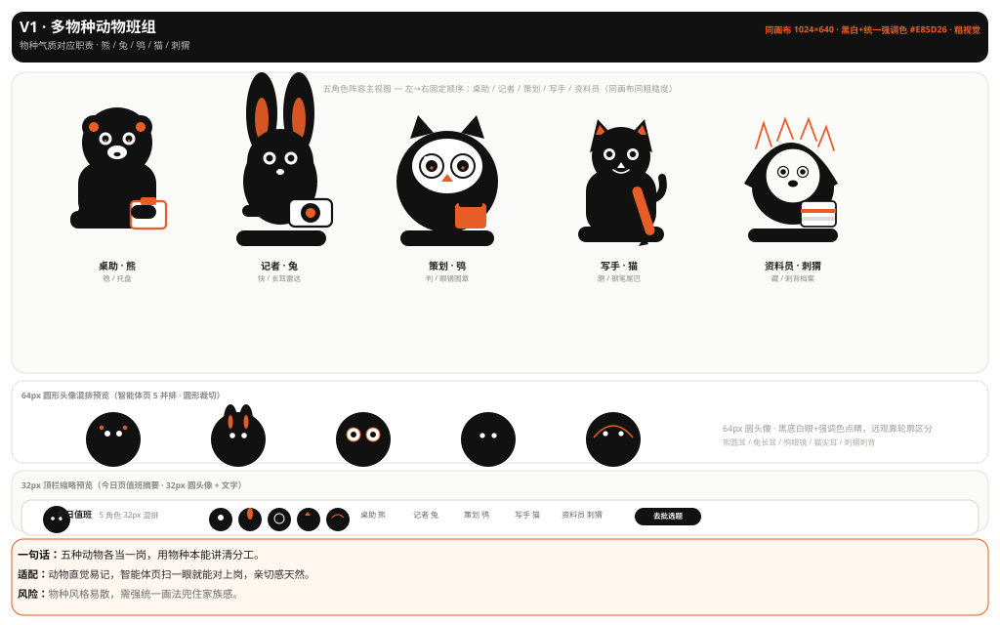
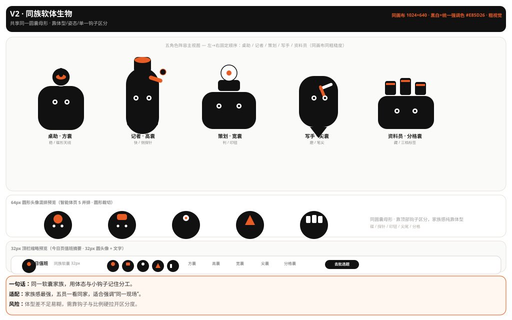
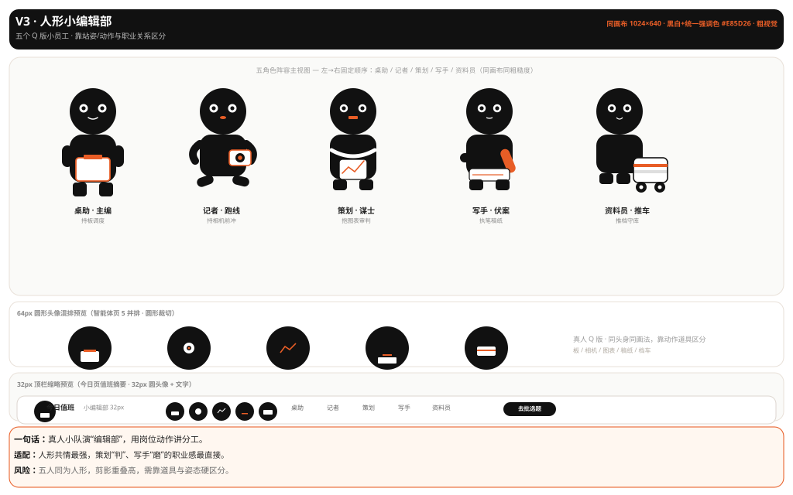
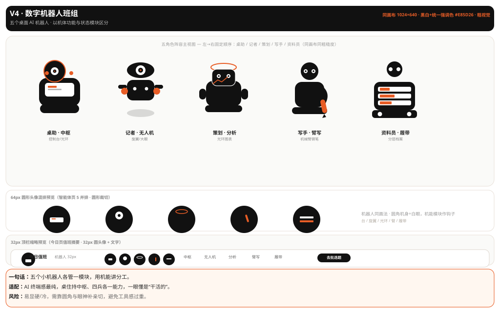
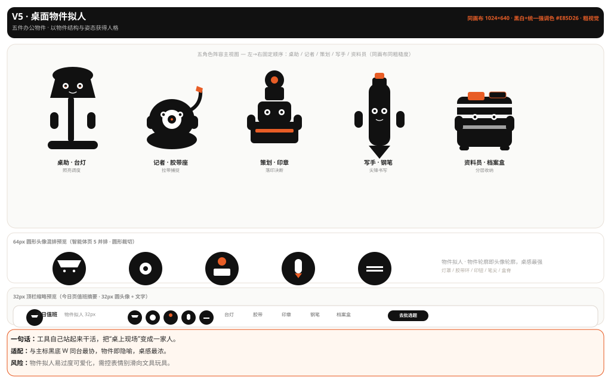

固定比较对象：桌助 / 记者 / 策划 / 写手 / 资料员 五角色，固定人格基线与评价场景（智能体页 64px 混排 + 今日页 32px 顶栏）；唯一变量是角色载体/造型逻辑。五候选同画布(1024×640)、同粗糙度、同限色(黑白+统一强调色 #E85D26)、同顺序同标签。
concepts.md 旧候选「主编桌上的常驻班组 / 接力链 / 守夜人」与方向 DA-01 桌上文具拟人 均已标记作废，旧板 directions/concept-a/board.html 封存仅备查，不进入评审。本板 concept-visuals-v2/board.html 为当前唯一有效并排。



